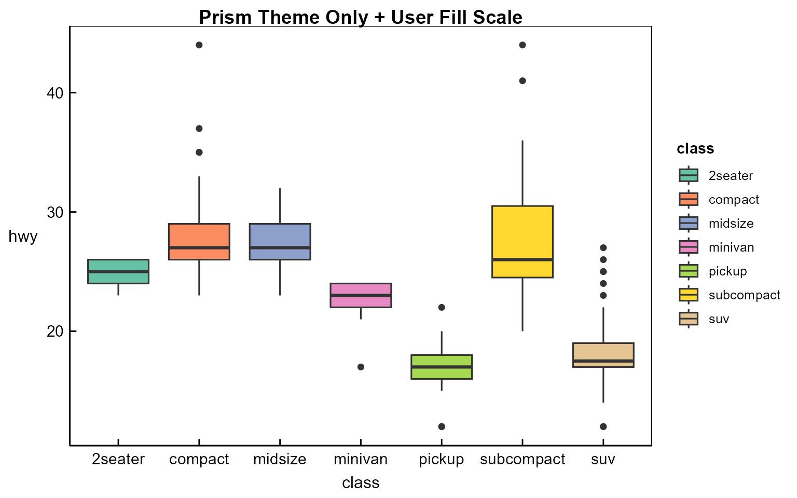
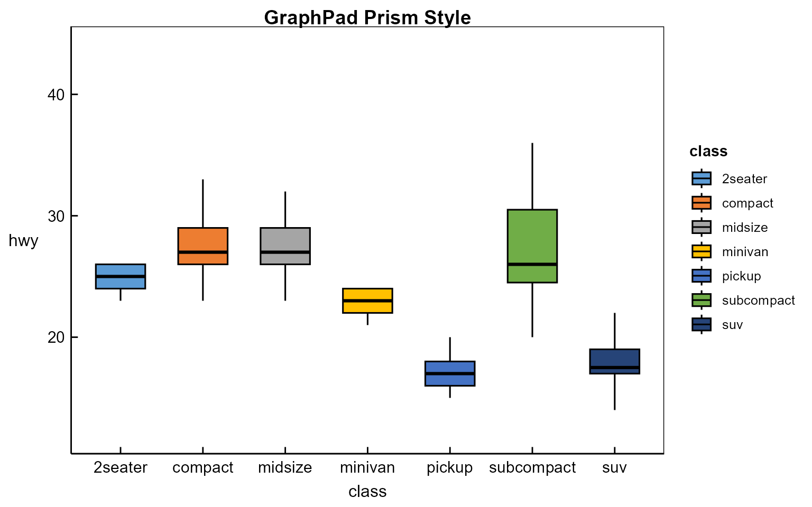
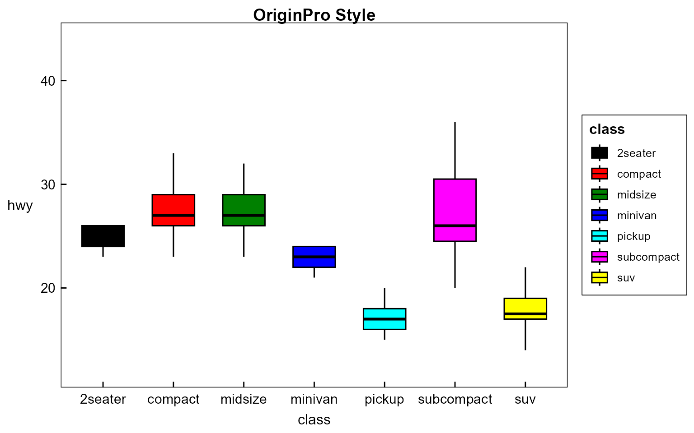
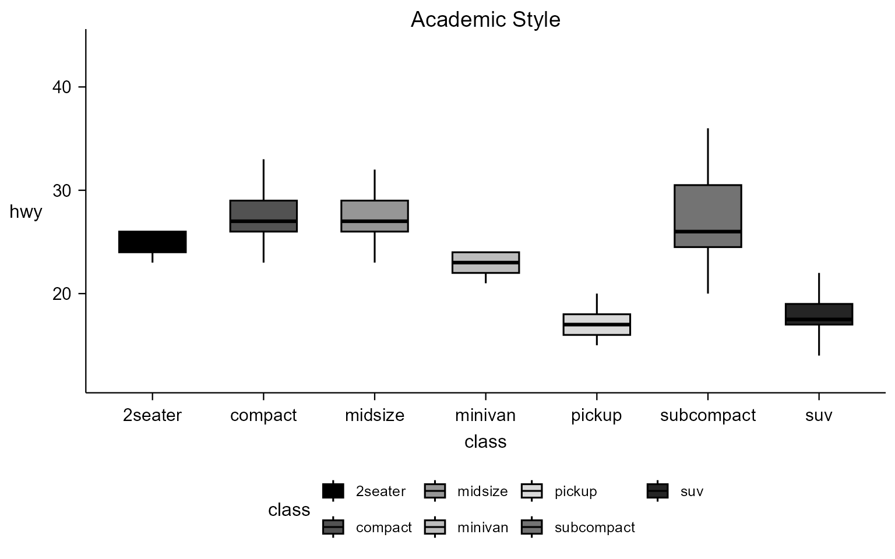
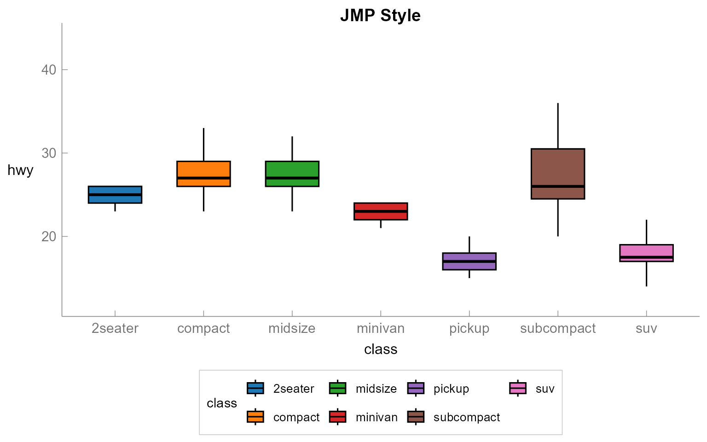
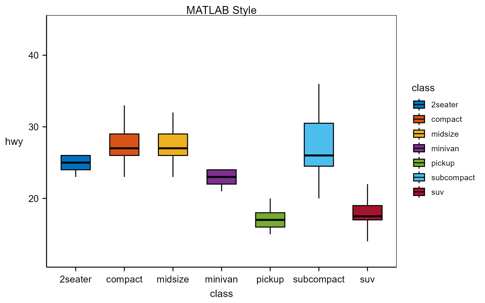
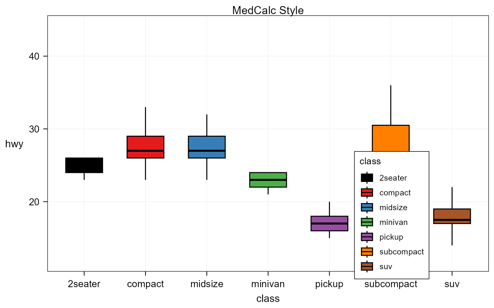
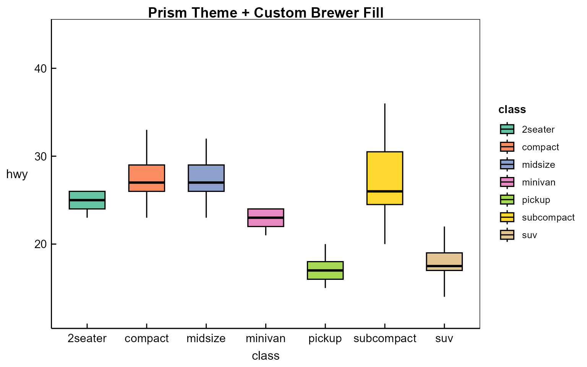
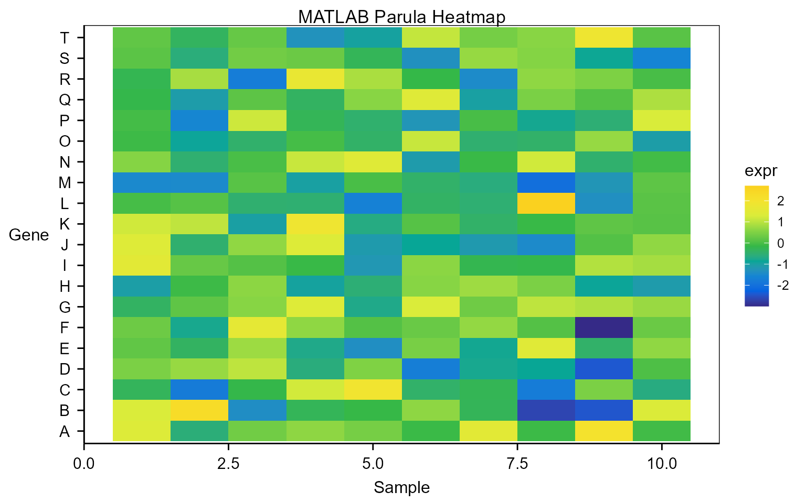
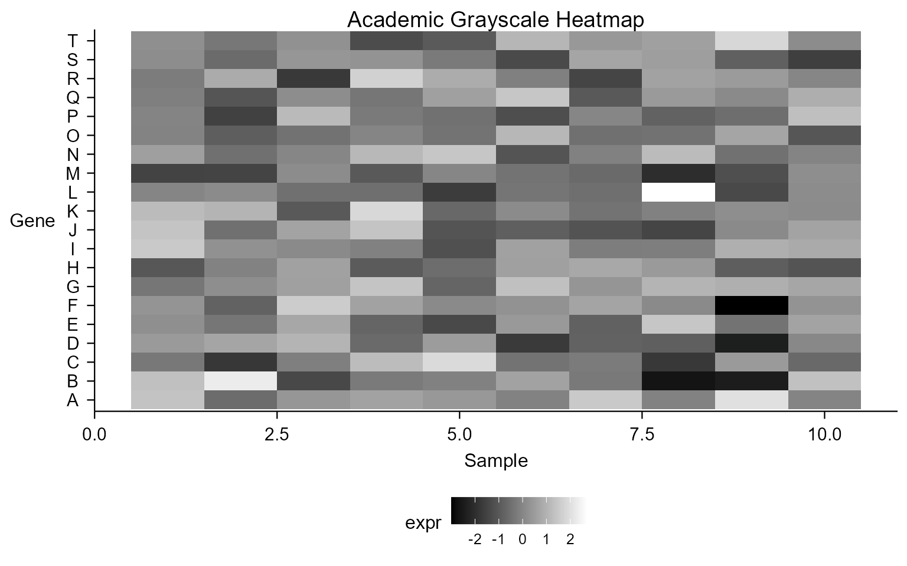

multiplot -- Software and Academic Style Gallery
multiplot
Source:vignettes/multiplot.Rmd
multiplot.RmdOverview
multiplot lets you emulate the default plot styles of
nine statistical graphing software packages plus one academic
publication style with a single function call:
ggchoice("style").
Each ggchoice() call applies three things at once:
- A complete
theme_xxx()— grid lines, borders, fonts, legend position - A
scale_color_xxx()— discrete colour palette matching the software - A
scale_fill_xxx()— discrete fill palette matching the software
Scales are additive: user-supplied
scale_*() calls added after
ggchoice() take priority, so you can always fine-tune.
If you want only the visual theme and not the default colour/fill
scales, use include_scales = FALSE:
ggplot(mpg, aes(class, hwy)) +
geom_boxplot(aes(fill = class)) +
ggchoice("prism", include_scales = FALSE) +
scale_fill_brewer(palette = "Set2") +
labs(title = "Prism Theme Only + User Fill Scale")## Scale for fill is already present.
## Adding another scale for fill, which will replace the existing scale.
The package defaults to base_family = "sans" for
portability. Exact Arial or Helvetica rendering depends on installed
system fonts and graphics devices.
Style Gallery
1. GraphPad Prism
White background, no grid, black box border, sans-serif (Arial) font, bold title. Prism pastel-to-bold colour defaults.
ggplot(mpg, aes(class, hwy)) +
geom_boxplot_prism(aes(fill = class)) +
ggchoice("prism") +
labs(title = "GraphPad Prism Style")
2. SPSS (v12–24 default)
Classic SPSS: white bg, light grey grid, full box border, sans-serif (Arial), muted professional palette with SPSS blue (#3E58AC) dominant. Legend right, title centred. Understated, publication-ready.
ggplot(mpg, aes(class, hwy)) +
geom_boxplot_prism(aes(fill = class)) +
ggchoice("spss") +
labs(title = "SPSS Style")
3. OriginPro (classic default)
Black-Red-Green-Blue palette, white bg, grid OFF (classic default), black axes + layer frame, legend with box, bold title.
ggplot(mpg, aes(class, hwy)) +
geom_boxplot_prism(aes(fill = class)) +
ggchoice("origin") +
labs(title = "OriginPro Style")
4. Stata (s2color scheme)
Light bluish background tint (#F4F7FA), horizontal bluish grid only, 15-colour s2color palette, legend below plot. Default prior to Stata 18.
ggplot(mpg, aes(class, hwy)) +
geom_boxplot_prism(aes(fill = class)) +
ggchoice("stata") +
labs(title = "Stata s2color Style")
5. Academic (AMS / Science)
Minimal B&W, no grid, thin axis lines, bottom legend. Ideal for journal submission.
ggplot(mpg, aes(class, hwy)) +
geom_boxplot_prism(aes(fill = class)) +
ggchoice("academic") +
labs(title = "Academic Style")
6. SigmaPlot
Single-series black, multi-series grayscale. White background, no grid, black box frame. Publication-ready defaults.
ggplot(mpg, aes(class, hwy)) +
geom_boxplot_prism(aes(fill = class)) +
ggchoice("sigmaplot") +
labs(title = "SigmaPlot Style")
7. JMP
No grid, no outer frame (axes only), tick marks outside, bottom legend. Clean interactive feel.
ggplot(mpg, aes(class, hwy)) +
geom_boxplot_prism(aes(fill = class)) +
ggchoice("jmp") +
labs(title = "JMP Style")
8. MATLAB (R2014b+)
Black outer box frame, 7-colour R2014b order (parula-like), right legend. Anti-aliased modern look with inward ticks.
ggplot(mpg, aes(class, hwy)) +
geom_boxplot_prism(aes(fill = class)) +
ggchoice("matlab") +
labs(title = "MATLAB Style")
9. Minitab
Light grey background (#F5F5F5), dark blue frame (#1F497D), no grid, black title. Dark blue strip headers.
ggplot(mpg, aes(class, hwy)) +
geom_boxplot_prism(aes(fill = class)) +
ggchoice("minitab") +
labs(title = "Minitab Style")
10. MedCalc (ROC-optimised)
Square plot area, clean white background, legend inside plot area (lower right). Optimised for ROC curve presentation; grid off for uniform appearance in multi-panel layouts.
ggplot(mpg, aes(class, hwy)) +
geom_boxplot_prism(aes(fill = class)) +
ggchoice("medcalc") +
labs(title = "MedCalc Style")
Prism-style error bars
df <- data.frame(
group = c("Control", "Treatment A", "Treatment B"),
mean = c(10, 14, 8),
sd = c(2, 3, 1.5)
)
ggplot(df, aes(group, mean)) +
geom_col_prism(fill = "#5B9BD5") +
geom_errorbar_prism(aes(ymin = mean - sd, ymax = mean + sd)) +
ggchoice("prism") +
labs(title = "Prism T-bar Error Bars", x = "", y = "Value")
Overriding scales
User scales added after ggchoice() take
priority:
ggplot(mpg, aes(class, hwy)) +
geom_boxplot_prism(aes(fill = class)) +
ggchoice("prism") +
scale_fill_brewer(palette = "Set2") + # overrides Prism fill
labs(title = "Prism Theme + Custom Brewer Fill")## Scale for fill is already present.
## Adding another scale for fill, which will replace the existing scale.
Continuous Colour Scales
For heatmaps, surface plots, or any continuous-colour visualization,
use the _c suffix variants:
# Simulated expression matrix
set.seed(42)
dm <- data.frame(
gene = rep(LETTERS[1:20], each = 10),
sample = rep(1:10, 20),
expr = rnorm(200)
)
# MATLAB-style heatmap (Parula colormap)
ggplot(dm, aes(sample, gene, fill = expr)) +
geom_tile() +
ggchoice("matlab") +
scale_fill_matlab_c() +
labs(title = "MATLAB Parula Heatmap", x = "Sample", y = "Gene")## Scale for fill is already present.
## Adding another scale for fill, which will replace the existing scale.
# Academic grayscale heatmap
ggplot(dm, aes(sample, gene, fill = expr)) +
geom_tile() +
ggchoice("academic") +
scale_fill_academic_c() +
labs(title = "Academic Grayscale Heatmap", x = "Sample", y = "Gene")## Scale for fill is already present.
## Adding another scale for fill, which will replace the existing scale.
Available continuous scales: scale_color/fill_prism_c(),
scale_color/fill_origin_c(),
scale_color/fill_matlab_c(),
scale_color/fill_stata_c(),
scale_color/fill_academic_c(),
scale_color/fill_minitab_c(),
scale_color/fill_medcalc_c().
Style Reference Table
| Style | Evidence | Default Font | Grid | Outer Frame | Palette Type |
|---|---|---|---|---|---|
| Prism | A | sans | Off | Black box (ticks outward) | Pastel-bold |
| SPSS | A | sans | Light grey | Black box | Blue-dominant |
| OriginPro | B | sans | Off | Black box (ticks outward) | Black→Red→Green→Blue |
| Stata s2color | B | sans | Horizontal bluish | Thin grey (legend bottom) | 15-colour cycle |
| Academic | D | sans | Off | Off (axes only) | Grayscale |
| SigmaPlot | B | sans | Off | Black box | Black + grayscale |
| JMP | B | sans | Off | Off (axes only) | JMP blue + Tableau |
| MATLAB | A | sans | Off | Black box | R2014b 7-colour |
| Minitab | B | sans | Off | Dark blue | Dark blue primary |
| MedCalc | B | sans | Off | Black box (legend inside) | Clinical contrast |
Evidence levels: A = real bar/box screenshots checked; B = selected screenshot or template plus documentation checked; D = internally defined benchmark.
Default ggplot2
Calling ggchoice() with no argument (or
ggchoice("ggplot2")) returns plain theme_bw()
— no scale changes applied.
GraphPad Prism, SPSS, OriginPro, Stata, SigmaPlot, JMP, MATLAB,
Minitab, and MedCalc are trademarks or product names of their respective
owners. multiplot is independent and is not affiliated with
or endorsed by those owners.